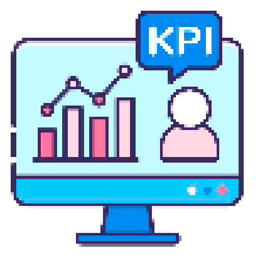
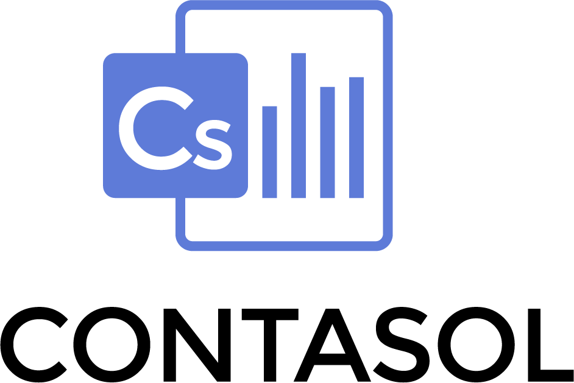

Learning


Contrato de Prácticas
Septiembre 2024 - Actualidad
Tareas Realizadas (En progreso):
• Trabajé en la programación de formularios y portales de clientes utilizando JavaScript y PHP.
• Realicé análisis de vulnerabilidades en servicios web de clientes empleando herramientas como Gobuster, Nessus Essentials, WPScan, y OWASP Zap.
• Desarrollo de un cuadro de mandos para el análisis de riesgos y cumplimiento de RGPD en colaboración con PRODAT, utilizando librerías gráficas de JavaScript, como parte de mi Trabajo Final de Grado (TFG).
• Llevo a cabo análisis de riesgos en los activos de PYMES utilizando la metodología MAGERIT utilizando de base herramientas como PILAR.
Habilidades Adquiridas (En progreso):
• Programación portales de clientes en JavaScript y PHP
• Análisis de vulnerabilidades web
• Desarrollo de cuadros de mando con librerías gráficas de JavaScript
• Análisis de riesgos basado en la metodología MAGERIT
• Uso de herramientas especializadas como PILAR
• Cumplimiento normativo y análisis del RGPD
• Resolución de problemas y atención a las necesidades
del cliente
Contrato de Prácticas
Abril 2023 - Julio 2023
Tareas Realizadas:
• Trabajé en la programación de la aplicación APPIA.Monitor, centrada en realizar tareas de monitoreo y Business Intelligence (BI) para diferentes clientes y empresas.
• Esto implicó trabajar con KPIs, gráficos expresivos y la preparación de dashboards personalizados según las especificaciones de los clientes.
• Colaboré brevemente en el proyecto personal APPIA.Veneto de la empresa, utilizando .NET Blazor y Visual Studio.
• Los problemas que enfrenté se centraron en satisfacer las necesidades de los clientes a través de la mejora y creación de dashboards.
• Utilicé consultas SQL en Microsoft SQL Server para crear consultas y luego utilicé gráficos, tablas y otros elementos visuales para que los clientes puedan obtener KPIs con precisión.
Habilidades Adquiridas:
• Monitoreo y Business Intelligence (BI)
• Trabajo con KPIs, gráficos y dashboards personalizados
• Uso de .NET Blazor y Visual Studio
• Uso de consultas SQL en Microsoft SQL Server
• Colaboración y trabajo en equipo
• Comunicación profesional
• Resolución de problemas

Empresa Familiar
2020 - Actualidad
Tareas Realizadas:
• Creación de informes financieros y personalizados utilizando con destreza Excel y ContaSol.
• Registro y seguimiento de transacciones financieras aplicando Fundamentos básicos en Contabilidad.
• Gestión eficaz del tiempo y las prioridades, implementación de sistemas de seguimiento y organización eficiente de tareas contables.
Habilidades Adquiridas:
• Fundamentos básicos en Contabilidad
• Creación de informes financieros
• Destreza en uso de Excel y ContaSol
• Registro y seguimiento de transacciones financieras
• Gestión eficaz del tiempo
• Organización eficiente de tareas contables
